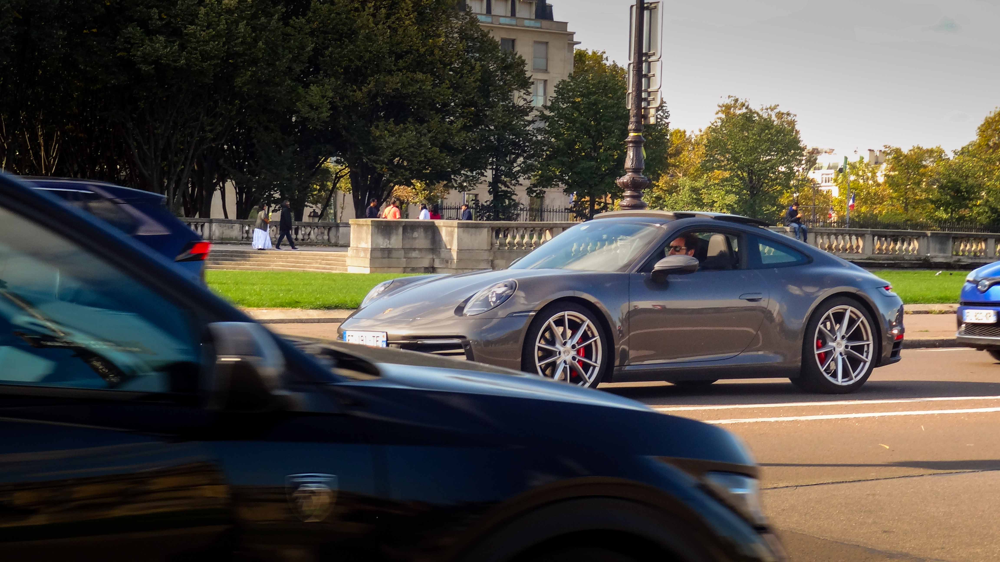
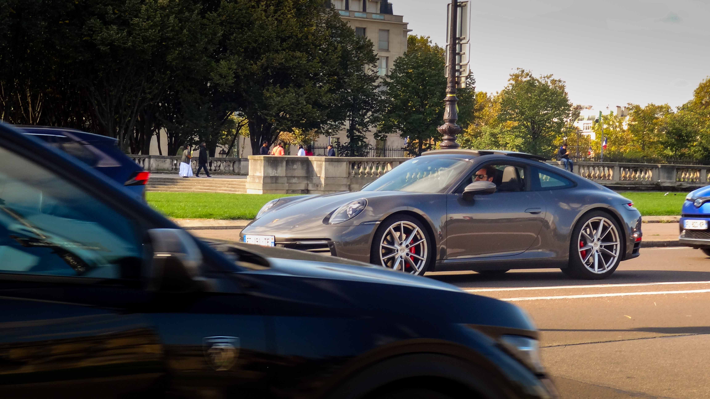
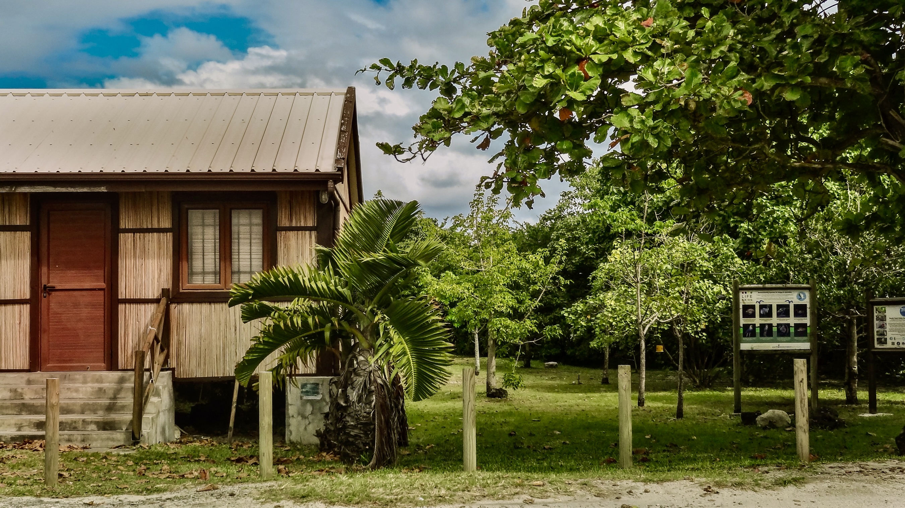
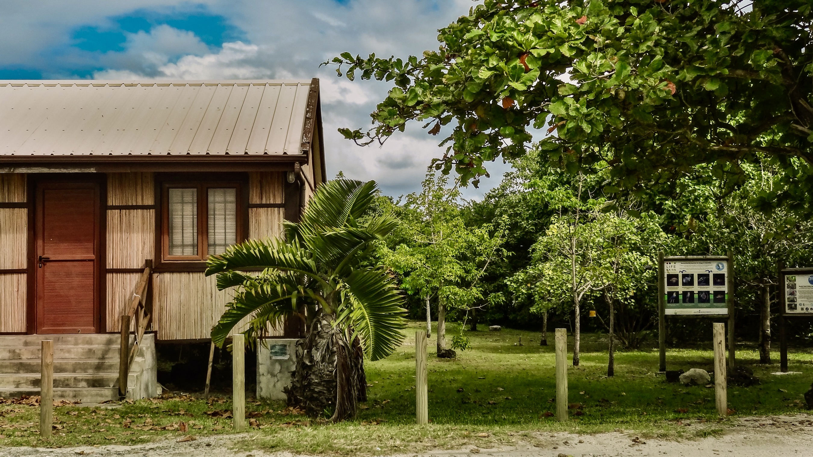

Is studying in Paris libraries worth the hype?
A personal experience at the BnF Richelieu, exploring whether its atmosphere truly enhances focus, productivity, and study motivation as a student.
A selection of my photographs.


 

 



Notes and experiences from my time in Paris.
A personal experience at the BnF Richelieu, exploring whether its atmosphere truly enhances focus, productivity, and study motivation as a student.
My art